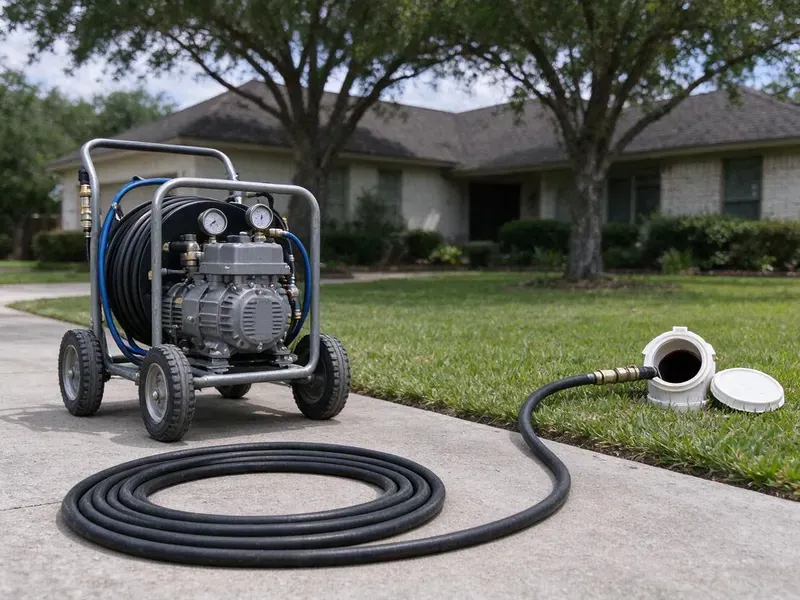

Hydro Jetting in New Martinsville, WV
Tired of the same clog returning? Our New Martinsville, WV jetting crew cleans the entire pipe wall, not just a hole through the blockage.
- High-Pressure Cleaning
- Removes Stubborn Buildup
- Quick Clog Removal
- Prevents Future Blockages

Need Serious Drain Cleaning? Get Hydro Jetting Service in New Martinsville, WV.
Our certified plumbers are ready to clear your toughest clogs with modern hydro jetting equipment.
Hydro Jetting in New Martinsville, WV for Grease, Scale and Root Problems
GJK Plumbing uses hydro jetting to clean drain and sewer pipes with water at pressures typically in the 3,000 to 4,000 PSI range for residential work. Specialized nozzles push rear-facing jets that scrub the pipe wall while pulling the hose forward.
Our expertise includes:
- Restore full flow to residential and commercial pipes.
- Prevent recurring clogs with complete pipe cleaning.
- Pre and post jetting video inspection with recordings

Additional Drain Services Services in New Martinsville, WV
From stubborn kitchen clogs to main sewer backups, our drain services in New Martinsville, WV restore full flow fast and keep it that way.


Customers
Why Choose GJK Plumbing for Hydro Jetting in New Martinsville, WV?
Hydro jetting is a superior method for truly cleaning your pipes, not just poking a hole through a blockage. It is especially helpful for older homes in New Martinsville and for dealing with mineral buildup.
- Preventative Care, Regular hydro jetting can prevent future clogs and extend the life of your plumbing system.
- Full-Wall Cleaning, Jetting scrubs the pipe circumference instead of leaving a narrow channel through the clog.
- Prevents Recurrence, By thoroughly cleaning the pipe walls, hydro jetting greatly reduces the chances of blockages forming again quickly.
Citywide Coverage
No matter where you are in New Martinsville, our trained plumbers are ready to bring hydro jetting equipment to resolve your most stubborn drain issues. We are dedicated to keeping drains flowing smoothly throughout the entire New Martinsville, WV area.
Experienced Team
Our hydro jetting technicians at GJK Plumbing are well trained and experienced in operating this equipment safely and effectively. They understand the differences of the pipe materials and blockage types common in West Virginia.
Safety-First Approach
Safety is a priority in all our hydro jetting work. We follow all local New Martinsville, WV plumbing codes and industry best practices to protect your property and our technicians.
Trusted Certified New Martinsville Plumbing Services Professionals
At GJK Plumbing, we take pride in providing certified plumbing services throughout New Martinsville, WV. Backed by leading industry credentials, our experienced plumbers combine technical skill with genuine customer care. Whether it is repair, installation, or maintenance, we follow strict safety and quality standards to deliver lasting results you can trust.
Call Us Now PHCC Plumbing Contractor Recognition
PHCC Plumbing Contractor Recognition Better Business Bureau (BBB) Accreditation
Better Business Bureau (BBB) Accreditation Angi Certified Pro
Angi Certified Pro ISO 9001 Quality Management Certification
ISO 9001 Quality Management CertificationAdvanced Hydro Jetting Solutions in New Martinsville, WV
Hydro Jetting Cost Compared to Snaking in New Martinsville, WV
Jetting costs more than a basic cable cleaning on the first visit. However, it often lasts much longer because it removes the coating that causes repeat clogs. If you are paying for snaking several times a year, jetting usually costs less over time. We give you both prices and our straight view on which fits your line. For simple soft clogs, a cable may be all you need.

Camera Inspection and Hydro Jetting in New Martinsville, WV
Before performing any hydro jetting, especially for challenging clogs, GJK Plumbing always recommends a thorough sewer camera inspection. This lets us precisely locate the blockage, identify its nature, and assess the condition of your pipes. This important step confirms that hydro jetting is the right solution and helps us select the correct pressure and nozzle, safeguarding your plumbing system in New Martinsville, WV.
Preventive Maintenance Jetting in New Martinsville
If your line has a history of clogs, a maintenance plan can keep it clear. We schedule jetting every 12 to 24 months for homes and more often for busy commercial kitchens. Regular cleaning prevents the buildup from ever reaching the point of a backup. It also gives us a chance to camera the line and catch new problems early. Maintenance customers get priority scheduling.
Emergency Hydro Jetting Services in New Martinsville, WV
When you have a severe, overflowing drain or a complete sewer backup in New Martinsville, WV, you need fast help. GJK Plumbing offers emergency hydro jetting to quickly resolve urgent plumbing problems. Our quick response team can bring jetting equipment to clear critical blockages, minimizing water damage and restoring your plumbing system as fast as possible. Don't wait, call us when every minute counts.
Preventative Maintenance Hydro Jetting in New Martinsville, WV
Proactive hydro jetting can save New Martinsville, WV property owners from unexpected plumbing emergencies. For homes and businesses with a history of drain issues or those prone to specific types of buildup, scheduled hydro jetting is an smart preventative measure. By regularly removing scale, grease, and other debris before they cause a full blockage, you can lengthen the life of your pipes, avoid costly repairs, and maintain consistent drainage. We can set up a tailored maintenance schedule for your needs.
Hydro Jetting Before Pipe Lining in New Martinsville, WV
Cured-in-place pipe lining needs a clean surface to adhere and seal correctly. We jet the host pipe to remove roots, scale and debris, then camera it to confirm it is ready. Any heavy obstructions are cut out before the liner is installed. Skipping this step can lead to wrinkles or poor bonding. Proper prep is part of why lined pipe can last many years.
Sewer Line Descaling with Hydro Jetting in New Martinsville
Over time, mineral deposits and other materials can build up on the interior walls of sewer lines, forming a tough scale. This reduces pipe diameter and can lead to frequent clogs. Many West Virginia homes rely on private wells or springs, and that water can carry iron, manganese or sulfur that discolors fixtures and laundry. Hydro jetting is the most effective method for sewer line descaling, using powerful water jets to break down and flush away these mineral deposits, restoring the pipe's full carrying capacity and slowing future buildup.

Residential Sewer Line Jetting in New Martinsville
Main sewer lines in homes are usually 3 or 4 inches and can collect years of grease, soap, mineral scale and roots. We feed jetting hose through a cleanout and work it toward the street, cleaning in passes. Rear-facing jets pull the nozzle forward while forward jets break up heavy blockages. The water carries debris down to the city main. A camera run afterward shows the pipe walls clean and open.
Hydro Jetting Near Me in New Martinsville, WV
When you search for hydro jetting near me in New Martinsville, WV, GJK Plumbing is your trusted local expert. We are very familiar with the plumbing infrastructure and common issues affecting homes and businesses throughout the area. Being close by means faster response times and reliable service when you need it most.
We pride ourselves on being trusted local experts for drain cleaning solutions. When you choose GJK Plumbing for hydro jetting in New Martinsville, you are choosing a company committed to lasting results and great customer service right in your neighborhood.
GJK Plumbing at a Glance
- Licensed and insured plumbers serving New Martinsville, WV
- Same-day appointments and 24/7 emergency response
- Clear written estimates, no hidden fees
- 4.8-star rated by 832+ West Virginia customers
New Martinsville Map
New Martinsville Information
- Population
- 5,087
- Area codes
- Local
- Service area
- New Martinsville and communities within 40 miles
- Nearby
- Moundsville, Wheeling, Clarksburg, Fairmont
Hydro jetting is especially useful for homes in New Martinsville, WV, where shifting soil can stress and crack pipes, allowing root intrusion, and mineral buildup can choke drain lines over time. Shale and clay soils can hold water and shift over time, which can crack sewer lines and push water into basements.
Expert Services
Trust our professionals for reliable GJK Plumbing solutions in New Martinsville, WV.
Our Specialized Plumbing Services in New Martinsville, WV
At GJK Plumbing, we provide a complete range of plumbing services across New Martinsville, WV. From leak detection to full system installations, our team ensures fast, precise, and affordable service for both residential and commercial properties. Explore our core services below:


How Our Hydro Jetting Process Works in New Martinsville, WV
Our hydro jetting process is thorough and designed for maximum effectiveness while protecting your plumbing system.
Request a Quote
Call (681) 223-3607 and tell us about the clogs you are having and how often. We schedule an inspection and give you a ballpark price.
Inspect the Pipe
We run a camera to check pipe material, condition and the cause of the blockage. This tells us the safe pressure and the right nozzle.
Jet and Verify
We jet the line in passes until the walls are clean and the water runs clear. A final camera run verifies the result.
Frequently Asked Questions About Hydro Jetting in New Martinsville
The cost of hydro jetting in New Martinsville, WV usually ranges from $300 to $800, depending on the severity of the clog, the length and diameter of the pipe, and ease of access. More complex jobs, like main sewer line descaling or extensive root removal, may be on the higher end. We provide a transparent quote after an initial inspection.
A standard residential hydro jetting service in New Martinsville typically takes between 1 and 3 hours. This includes the initial camera inspection, the jetting process itself, and a final inspection. More extensive commercial jobs or severe main line blockages might need more time.
While hydro jetting effectively removes existing tree roots from your sewer line, it does not prevent new roots from growing back. For a long-term solution to recurring root intrusion, we might recommend trenchless sewer repair or pipe replacement, which we can discuss during our assessment.
Repeat clogs in the same line, slow drains after snaking, sewer odors and known grease or root problems are good reasons to consider jetting.
The length of a hydro jetting service in New Martinsville varies depending on the severity and location of the clog. A typical residential drain might take 1 to 2 hours, while a major sewer line or commercial job could take 3 to 4 hours or more. Our technicians work quickly to minimize disruption.
Most residential jobs take 1 to 3 hours including inspection. Long commercial lines or heavy grease can take longer.
It is safe for most pipes in fair condition when pressure is set correctly. We camera the line first and avoid jetting pipe that is broken or collapsed.
Small consumer jetters exist, but they lack the pressure and flow of professional units. High-pressure water can also injure untrained users and harm fragile pipe.
What People Are Saying About Our Plumbing Experts?

Robert G.
The trenchless sewer replacement saved our front yard. They walked us through the camera inspection footage first so we knew exactly what we were paying for.
Sewer Line Replacement · Moundsville, WVJames P.
Our commercial plumbing system had a leak under the sink, and GJK Plumbing handled it professionally. The plumbers arrived quickly and restored everything without disruption to our customers.
Commercial Plumbing · Vienna, WV
Patricia H.
We had a slab leak that two other companies could not find. GJK Plumbing located it in under an hour, explained our options, and the price matched the quote to the dollar.
Slab Leak Repair · Fairmont, WV
Sofia M.
Two new toilets installed in one visit, no mess left behind, and the tech even adjusted a faucet he noticed was dripping. Fair pricing and really friendly.
Toilet Installation · Clarksburg, WVLaura S.
I scheduled a water heater replacement, and the team made the process smooth and affordable. The new unit works perfectly, and they cleaned up after completing the job.
Water Heater Replacement · Moundsville, WV
Emily R.
I called GJK Plumbing for plumbing repair, and the technician was fast, polite, and thorough. They explained the problem clearly and fixed it the same day. I will definitely hire them again. Highly recommended!
Plumbing Repair · New Martinsville, WV